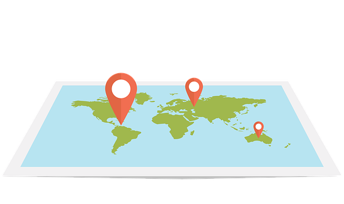

<section class="oe_container">
    <div class="oe_row oe_spaced">
        <div class="oe_span12">
            <h2 class="oe_slogan">GPS</h2>
            <h3 class="oe_slogan">Base functions</h3>
        </div>
    </div>
</section>

<section class="oe_container">
    <div class="oe_row">
        <div class="oe_span6">
            
        </div>
        <div class="oe_span6">
            <p class='oe_mt32'>
                <ul>
                    <li>creates gps.coords records that can be associated to models</li>
                    <li>coords are saved in the decimal degrees format</li>
                    <li>users can choose wich coordinate format to use throughout Odoo</li>
                </ul>
                <br/>
                PS: - map widget is based on Dorin Hongu's web_gmaps module - JavaScript had an invaluable help from Dinil UD
            </p>
        </div>
    </div>
</section>


<section class="oe_container" style="border:2px solid #f00;">
    <div class="oe_row">
        <div class="oe_span9">
            <h3 style="text-align:center;color:#579fbf;">
                If you like this module, if you think it's useful to you or your company,
                please, consider buying me a coffee! ;)
            </h3>
            <br/>
            <h4 style="text-align:center;color:gray;">
                (just click on the image on the right)
            </h4>
        </div>
        <div class="oe_span3" style="text-align:left;">
            <a href="https://ko-fi.com/S6S6MQBZ" target="_blank">
                
            </a>
        </div>
    </div>
</section>
